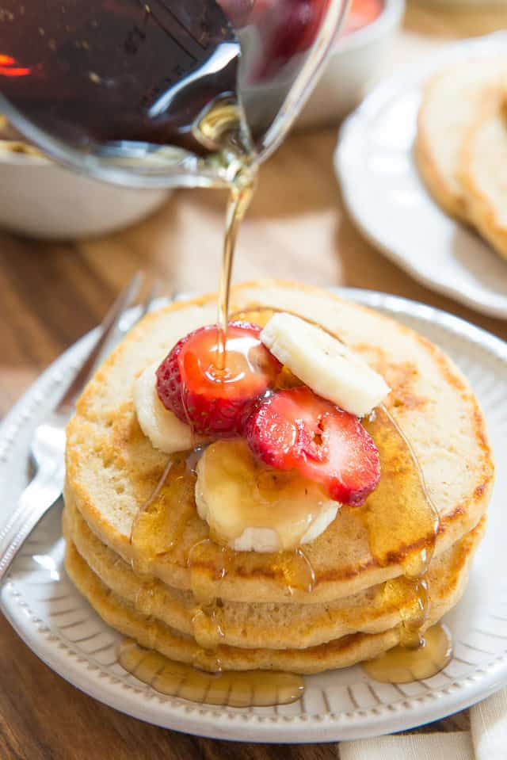

Whole Wheat Pancakes

Whole Wheat Pankcakes Recipe
Want the fluffy satisfaction of pancakes without compromising your diet? Try these whole wheat pancakes to fulfill your craving.
Ingredients
- 1 cup whole wheat flour
- 2 tsp sugar
- 1/2 tsp baking powder
- 1/4 tsp baking soda
- 1 cup buttermilk
- 1 egg
- 2 tbsp melted butter
- butter for greatsing the griddle
Steps
- In a big bowl, whisk to combine the whole wheat flour, sugar, baking powder, baking soda, and salt.
- In another bowl, whisk to combine the buttermilk, egg, and melted butter.
- Whisk the wet mixture into the dry ingredients, and stir the two together until just barely mixed. You want any visible loose flour to be stirred in, but there should still be plenty of lumps. If you stir out the lumps, the pancakes will likely be tough.
- Preheat a nonstick griddle to 375 degrees F and grease the surface with butter.
- Add small scoops of pancake batter (the batter will be thick) and use a cookie scoop to gently smooth the scoop into a flatter circle.
- Cook for a few minutes, until you see little bubbles forming on the surface.
- Flip the pancakes and cook for a couple minutes on the other side. If you peek underneath, the bottom should be golden brown.
- Serve with butter, pure maple syrup, or sliced fruit. Enjoy!